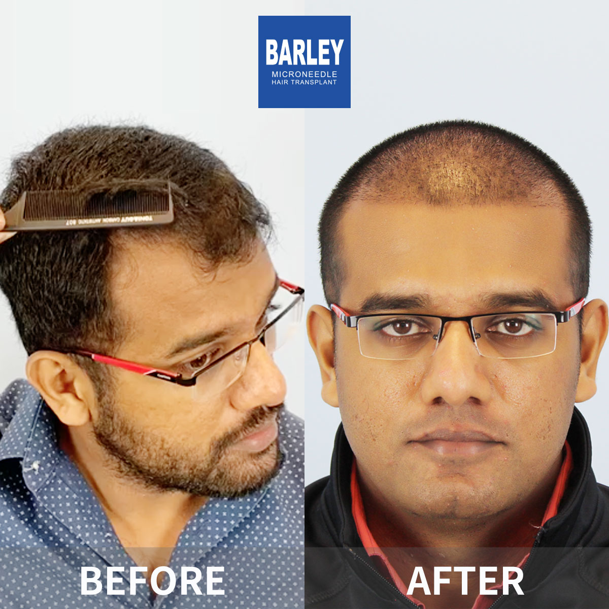
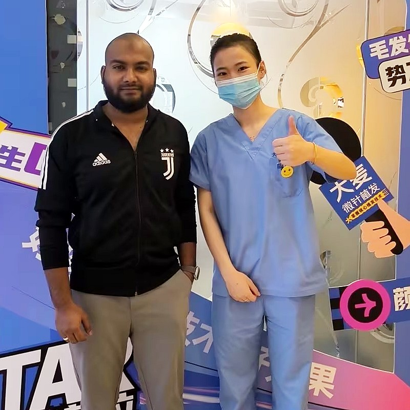

Finasteride is a prescription medication classified as a 5-alpha-reductase inhibitor. Originally developed in the 1980s for treating enlarged prostate (BPH), it received FDA approval in 1997 specifically for male pattern hair loss under the brand name Propecia. The drug works by interrupting the biochemical pathway that produces DHT, a hormone that genetically susceptible hair follicles are highly sensitive to. When DHT levels drop, the miniaturisation cycle that progressively thins and shortens hair is interrupted, allowing follicles to recover and resume normal growth patterns. Over 30 years of peer-reviewed clinical research confirms that a daily 1 mg dose reduces serum DHT by roughly 68% and scalp DHT by approximately 60%, making it the most potent oral anti-hair-loss therapy currently available. More than 40 million men worldwide have used finasteride, establishing an extensive safety database that supports its long-term tolerability.
Finasteride inhibits the Type II 5-alpha reductase enzyme, which is responsible for converting testosterone into dihydrotestosterone (DHT). By blocking this conversion, finasteride significantly reduces DHT levels in the blood and, critically, in the scalp tissues where hair follicles reside. Lower DHT levels mean less stimulation of the androgen receptors on genetically susceptible follicles, effectively halting the miniaturisation process that causes hair thinning and balding in men with androgenetic alopecia.
The primary benefit of finasteride is its ability to stop or dramatically slow the progression of hair loss. Clinical trials show that approximately 86% of men taking finasteride experienced either a halt in hair loss progression or visible regrowth over a two-year period. By maintaining existing hair that would otherwise be lost to DHT, finasteride preserves baseline hair density and provides a stable foundation for additional treatments such as hair transplantation or topical minoxidil to build upon.
While finasteride is most effective at preventing further hair loss, many patients also experience regrowth in areas where follicles have recently miniaturised but not yet permanently closed. This regrowth is most pronounced at the crown and mid-scalp, with visible improvements in hair count and thickness typically appearing after 6-12 months of consistent use. The regrowth potential is higher when treatment begins at an earlier stage of hair loss, before follicles undergo irreversible damage.
Finasteride is taken as a 1 mg tablet once daily, with or without food. Consistency is key\u2014the medication must be taken every day without interruption to maintain its therapeutic effect. It is important to understand that finasteride is a long-term treatment; if you stop taking it, DHT levels return to pre-treatment levels within a few weeks, and any hair maintained or regrown through the medication will gradually be lost over 6-12 months. Finasteride is approved for use in men only and is not recommended for women, particularly those who are pregnant or may become pregnant, due to the risk of birth defects. Women should not handle crushed or broken finasteride tablets. Potential side effects, though uncommon (affecting approximately 2-4% of users), can include decreased libido, erectile dysfunction, and reduced ejaculate volume. These side effects typically resolve upon discontinuation of the medication. All patients should have a thorough consultation with a qualified physician and undergo appropriate screening before starting finasteride. At Barley Hospital, our specialists provide comprehensive evaluation and ongoing monitoring to ensure safe and effective treatment.
Results from finasteride treatment follow a predictable timeline. During the first 3 months, patients typically notice a reduction in daily hair shedding as DHT levels drop and follicles begin to stabilise. Between months 3-6, early signs of improvement may appear, with hair loss visibly slowing or stopping. By months 6-12, many patients observe measurable increases in hair density and thickness, particularly at the crown and mid-scalp regions. Maximum benefits are generally achieved after 12-24 months of continuous treatment. After the two-year mark, the medication continues to maintain results with ongoing use. It is important to document progress with standardised photographs, as gradual improvements can be difficult to notice day to day. Finasteride works best as part of a comprehensive hair restoration strategy\u2014many of our patients use it in combination with minoxidil, PRP therapy, and/or hair transplantation for optimal, long-lasting results. Our medical team at Barley Hospital develops personalised treatment protocols and provides regular follow-up assessments to track your progress and adjust as needed.
Oral medication for preventing DHT-related hair loss in men

Finasteride is an FDA-approved oral medication that works by blocking DHT, the hormone responsible for male pattern baldness. It is one of the most effective hair loss treatments available. At Barley Hair Transplant, we provide medical guidance on finasteride, ensuring you understand how it works, what to expect, and whether it is the right choice for you as part of your hair restoration journey.
Understanding how this powerful DHT-blocking treatment works
What to expect with consistent daily use
Simple steps towards healthier, thicker hair
Professional evaluation to determine if it is right for you
Thorough understanding of how the treatment works
Simple once-a-day tablet, easy to maintain
Allow 3-6 months before visible results appear
Track and document your improvement over time
Continue use for sustained and lasting benefits
Why our finasteride treatment prioritises both safety and effectiveness
Before starting finasteride, our physicians conduct a thorough medical assessment to ensure it is appropriate for you, including a review of your health history and a personalised risk and benefit analysis.
Regular check-ins with our medical team to monitor your progress, address any concerns promptly, and ensure you are responding well to treatment with optimal safety throughout your journey.
We do not simply prescribe medication\u2014we educate you thoroughly on what to expect, how it works, realistic timelines, and how to maximise your results, all backed by over 18 years of clinical experience.
Industry leader with proven results and international recognition
Pioneer and leader in microneedle hair transplant technology since 2006
Across major cities in China, all maintaining the same high standards
Innovative microneedle and implant pen technology for superior results
Trusted by patients from around the globe for remarkable outcomes
Full English support for international patients throughout treatment
State-of-the-art facilities and strict safety protocols for your peace of mind
See the transformations our finasteride patients have achieved



Real moments captured with our satisfied patients

Finasteride worked as expected

Hair loss progression halted

Thicker and noticeably stronger

Seeing real, measurable progress

Very pleased with the outcome

Feeling genuinely better

Successfully maintained density

Noticeable improvement achieved
Honest feedback from our international patients
"I was concerned about starting a daily medication and wanted proper medical guidance. The Barley team thoroughly explained how finasteride works and what to expect. After eight months on the treatment, my hair loss has completely stabilised and I feel confident about my progress."
"The combination of finasteride and minoxidil that Barley prescribed has been remarkably effective. Finasteride stopped the hormonal damage to my follicles, while minoxidil stimulated new growth. At ten months, my Norwood Stage 3 hairline has improved to what looks like a Stage 2. The difference is genuinely visible."
"After my consultation, the doctor recommended I start with finasteride before considering a transplant. He explained that stabilising the hair loss first is crucial. Six months later, my shedding has reduced by approximately 80%, and I am seeing miniaturised hairs thickening up in my crown area. The medical approach really works."
"The professional medical oversight at Barley gave me complete confidence in the treatment. My doctor arranged regular check-ins to monitor my progress at three and six months, and everything was going well. The structured follow-up approach is what sets them apart from online prescription services."
"I had been losing hair since my mid-twenties and was approaching a Norwood Stage 4. The doctor at Barley was honest about what finasteride could achieve\u2014it would halt further loss and potentially regrow some hair, but would not restore a full juvenile hairline. Twelve months on, my results align exactly with those expectations, and I am very satisfied."
"The consultation process was straightforward and professional. After submitting my medical history and photographs, the prescribing doctor reviewed everything and confirmed finasteride was appropriate for me. The medication was arranged promptly, and I have been taking it daily for seven months with excellent results. My shedding has virtually stopped."
Experience our modern and comfortable treatment environment

Our state-of-the-art facility

Relax in our premium patient lounge

Sterile and fully equipped
Private and professional setting

Comfortable post-treatment space

Warm and welcoming entrance
Expert answers to the most common questions patients ask before starting finasteride treatment
Click to copy contact information
15810155700
+86 13730143529
hairtransplant@qq.com

Everyone's hair loss journey and solution are unique due to a variety of factors. Our hair restoration experts will assist you in determining the root cause and the best solution for your hair restoration plan. If you have any questions, please ask; we are happy to assist.